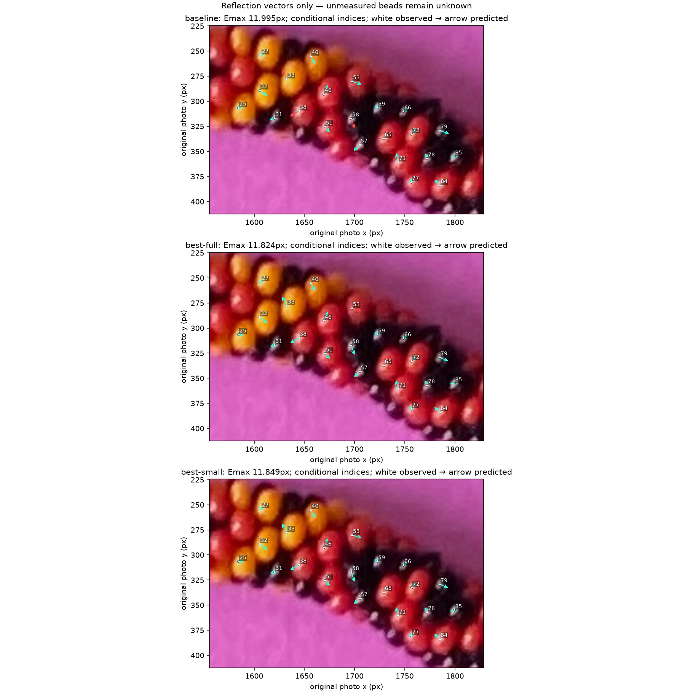
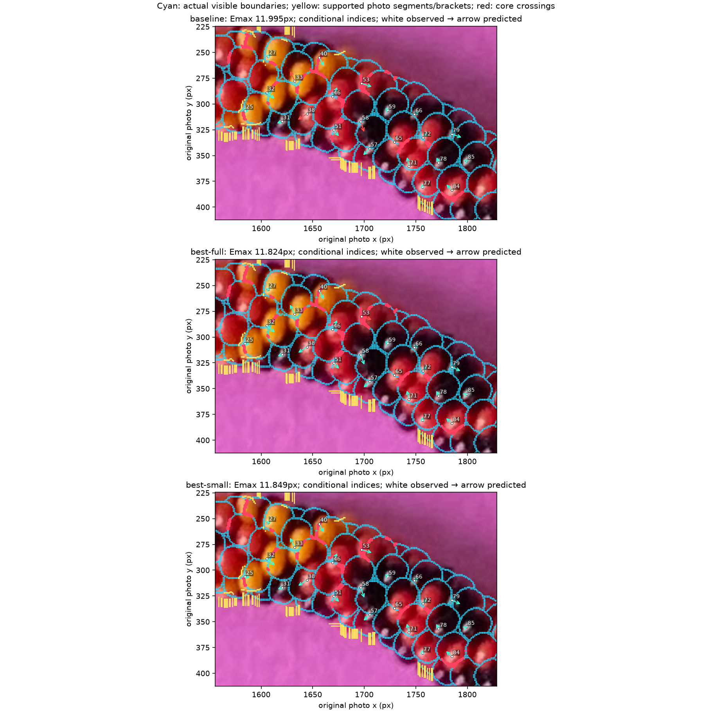
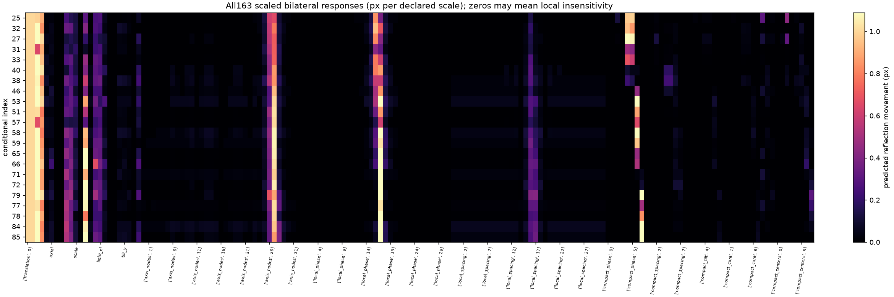
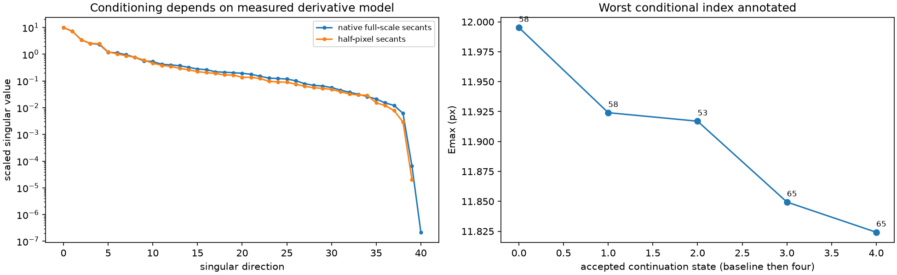
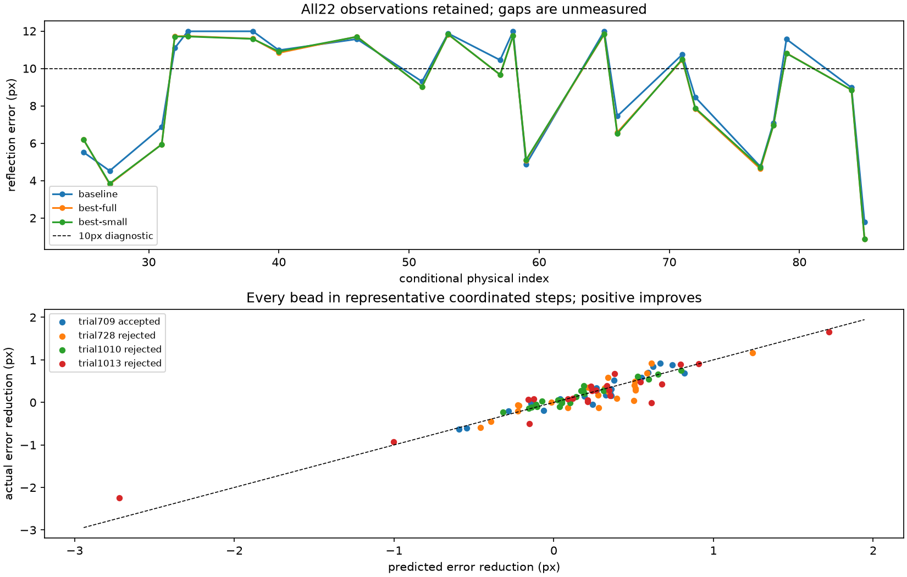

All22: 11.995 → 11.824px with geometry non-regression. No excellent reconstruction, no adoption. Small interval27–46: 11.709px on seven observations. Physical identities remain provisional.
Report · Actual R318 parameter ranges · Every reflection response · Every candidate outcome · Independent verification · Unannotated original pixels





| Trial | Model | Predicted max | Actual max | Outcome |
|---|---|---|---|---|
| 654 | full-minimax | 11.867 | unavailable | demonstrated-interpenetration |
| 655 | full-minimax | 11.755 | unavailable | demonstrated-interpenetration |
| 656 | full-minimax | 11.590 | unavailable | demonstrated-interpenetration |
| 657 | small-minimax | 11.549 | unavailable | demonstrated-interpenetration |
| 658 | small-minimax | 11.343 | unavailable | demonstrated-interpenetration |
| 659 | small-minimax | 11.119 | unavailable | demonstrated-interpenetration |
| 705 | small-local-minimax | 11.736 | 11.915 | certified-separation |
| 706 | small-local-minimax | 11.500 | 11.86 | core_loss:E5-1607-0290; core_loss:R282-1726-0280; core_loss:R282-1829-0358 |
| 707 | small-local-minimax | 11.412 | 12.219 | seam_conflict_fraction; external_boundary; core_loss:C-1585-0307; core_loss:E5-1633-0278; core_loss:E5-1607-0290; core_loss:E5-1671-0325; core_loss:R282-1726-0280 |
| 708 | wide-secant-minimax | 11.788 | 12.015 | core_loss:R282-1829-0358 |
| 709 | wide-secant-minimax | 11.634 | 11.929 | certified-separation |
| 710 | wide-secant-minimax | 11.475 | unavailable | compact rate bound |
| 711 | wide-secant-minimax | 11.203 | unavailable | compact rate bound |
| 712 | wide-secant-minimax | 10.667 | unavailable | compact rate bound |
| 713 | geometry-constrained-minimax | 11.788 | 12.015 | core_loss:R282-1829-0358 |
| 714 | geometry-constrained-minimax | 11.634 | 11.929 | certified-separation |
| 715 | geometry-constrained-minimax | 11.475 | unavailable | compact rate bound |
| 716 | geometry-constrained-minimax | 11.207 | unavailable | compact rate bound |
| 717 | geometry-constrained-minimax | 10.692 | unavailable | compact rate bound |
| 718 | small-constrained-minimax | 11.600 | 11.801 | seam_conflict_fraction |
| 719 | small-constrained-minimax | 11.512 | 11.682 | certified-separation |
| 720 | small-constrained-minimax | 11.347 | unavailable | compact rate bound |
| 721 | small-constrained-minimax | 11.028 | unavailable | compact rate bound |
| 722 | small-constrained-minimax | 10.444 | unavailable | compact rate bound |
| 723 | half-grid-minimax | 11.797 | 11.982 | seam_conflict_fraction; core_loss:R282-1829-0358 |
| 724 | half-grid-minimax | 11.643 | 11.918 | seam_conflict_fraction; core_loss:C-1585-0307; core_loss:E5-1607-0290 |
| 725 | half-grid-minimax | 11.508 | unavailable | compact rate bound |
| 726 | half-grid-minimax | 11.277 | unavailable | compact rate bound |
| 727 | half-grid-minimax | 10.876 | unavailable | compact rate bound |
| 728 | contact-constrained-full | 11.483 | 11.939 | external_boundary; core_loss:R282-1829-0358 |
| 729 | contact-constrained-full | 11.225 | unavailable | compact rate bound |
| 730 | contact-constrained-full | 10.741 | unavailable | compact rate bound |
| 731 | contact-constrained-full | 9.856 | unavailable | compact rate bound |
| 732 | contact-constrained-small | 11.356 | 11.694 | external_boundary |
| 733 | contact-constrained-small | 11.050 | 12.046 | external_boundary; core_loss:C-1559-0252 |
| 734 | contact-constrained-small | 10.510 | unavailable | compact rate bound |
| 735 | contact-constrained-small | 9.507 | unavailable | compact rate bound |
| 825 | narrow-patch-minimax | 11.690 | 11.64 | certified-separation |
| 826 | narrow-patch-minimax | 11.584 | 11.674 | certified-separation |
| 827 | narrow-patch-minimax | 11.480 | 11.591 | core_loss:E5-1785-0383 |
| 828 | narrow-patch-minimax | 11.373 | unavailable | demonstrated-interpenetration |
| 829 | narrow-patch-minimax | 11.220 | unavailable | demonstrated-interpenetration |
| 830 | narrow-patch-contact | 11.490 | 11.613 | core_loss:E5-1785-0383 |
| 831 | narrow-patch-contact | 11.395 | 11.711 | external_boundary; core_loss:E5-1785-0383; core_loss:R282-1726-0280 |
| 832 | narrow-patch-contact | 11.299 | 11.561 | external_boundary; core_loss:C-1559-0252; core_loss:C-1585-0307; core_loss:R282-1726-0280 |
| 833 | narrow-patch-contact | 11.242 | 11.595 | external_boundary; core_loss:C-1559-0252; core_loss:C-1585-0307; core_loss:E5-1785-0383; core_loss:R282-1726-0280 |
| 871 | iterate0-minimax | 11.722 | 11.824 | seam_conflict_fraction |
| 872 | iterate0-minimax | 11.686 | 11.901 | seam_conflict_fraction; external_boundary |
| 873 | iterate0-minimax | 11.633 | 11.79 | seam_conflict_fraction; external_boundary; core_loss:E5-1607-0290 |
| 874 | iterate0-minimax | 11.542 | 11.934 | seam_conflict_fraction; external_boundary; core_loss:C-1585-0307; core_loss:E5-1607-0290 |
| 875 | iterate0-minimax | 11.402 | 11.928 | external_boundary; core_loss:C-1585-0307; core_loss:E5-1607-0290 |
| 876 | iterate0-contact | 11.648 | 11.86 | external_boundary |
| 877 | iterate0-contact | 11.589 | 11.954 | external_boundary; core_loss:E5-1607-0290 |
| 878 | iterate0-contact | 11.532 | 12.173 | external_boundary; core_loss:C-1585-0307; core_loss:E5-1607-0290 |
| 879 | iterate0-contact | 11.491 | unavailable | compact rate bound |
| 917 | iterate1-minimax | 11.673 | 11.856 | external_boundary |
| 918 | iterate1-minimax | 11.613 | 11.723 | external_boundary |
| 919 | iterate1-minimax | 11.524 | 11.937 | external_boundary; core_loss:E5-1607-0290 |
| 920 | iterate1-minimax | 11.440 | 11.931 | external_boundary; core_loss:E5-1633-0278; core_loss:E5-1607-0290 |
| 921 | iterate1-minimax | 11.312 | unavailable | demonstrated-interpenetration |
| 922 | iterate1-contact | 11.524 | 11.937 | external_boundary; core_loss:E5-1607-0290 |
| 923 | iterate1-contact | 11.444 | 11.957 | external_boundary; core_loss:E5-1633-0278; core_loss:E5-1607-0290; core_loss:R282-1698-0280 |
| 924 | iterate1-contact | 11.360 | 12.04 | external_boundary; core_loss:E5-1607-0290 |
| 925 | iterate1-contact | 11.243 | unavailable | compact rate bound |
| 963 | iterate2-minimax | 11.689 | 11.731 | external_boundary |
| 964 | iterate2-minimax | 11.651 | 11.805 | external_boundary; core_loss:C-1585-0307 |
| 965 | iterate2-minimax | 11.586 | 11.814 | core_loss:C-1585-0307 |
| 966 | iterate2-minimax | 11.464 | 11.923 | external_boundary |
| 967 | iterate2-minimax | 11.321 | unavailable | unresolved |
| 968 | iterate2-contact | 11.588 | 11.77 | external_boundary; core_loss:C-1585-0307 |
| 969 | iterate2-contact | 11.500 | 12.125 | external_boundary; core_loss:C-1585-0307; core_loss:R282-1726-0280 |
| 970 | iterate2-contact | 11.420 | 12.871 | external_boundary; core_loss:C-1585-0307; core_loss:R282-1726-0280 |
| 971 | iterate2-contact | 11.348 | 13.224 | external_boundary; core_loss:C-1585-0307; core_loss:R282-1726-0280 |
| 1009 | iterate3-minimax | 11.690 | 11.786 | external_boundary |
| 1010 | iterate3-minimax | 11.657 | 11.774 | external_boundary |
| 1011 | iterate3-minimax | 11.607 | 11.739 | external_boundary |
| 1012 | iterate3-minimax | 11.551 | 11.761 | external_boundary; core_loss:C-1559-0252; core_loss:E5-1785-0383; core_loss:R282-1726-0280 |
| 1013 | iterate3-minimax | 11.496 | 11.696 | external_boundary; core_loss:C-1559-0252; core_loss:C-1585-0307; core_loss:R282-1726-0280 |
| 1014 | iterate3-contact | 11.610 | 11.761 | external_boundary |
| 1015 | iterate3-contact | 11.553 | 11.727 | external_boundary; core_loss:C-1559-0252; core_loss:R282-1726-0280 |
| 1016 | iterate3-contact | 11.502 | 11.747 | external_boundary; core_loss:C-1559-0252; core_loss:R282-1726-0280 |
| 1017 | iterate3-contact | 11.441 | unavailable | compact rate bound |
Static/offline review. No hidden model selection, color pattern, complete black outlines or inferred physical identity.